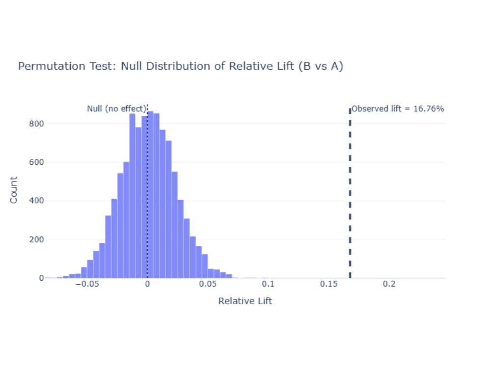
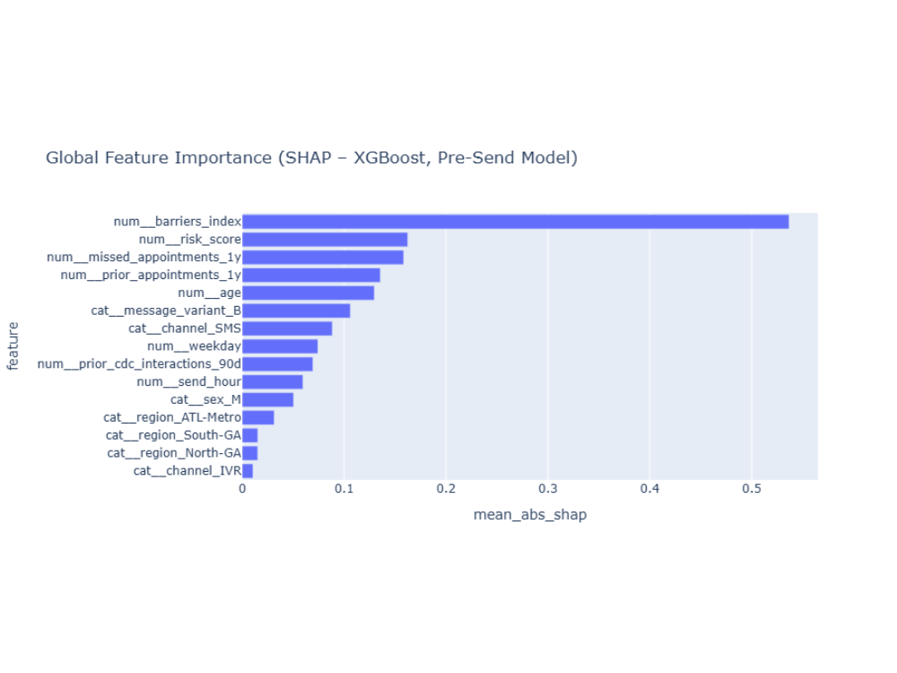
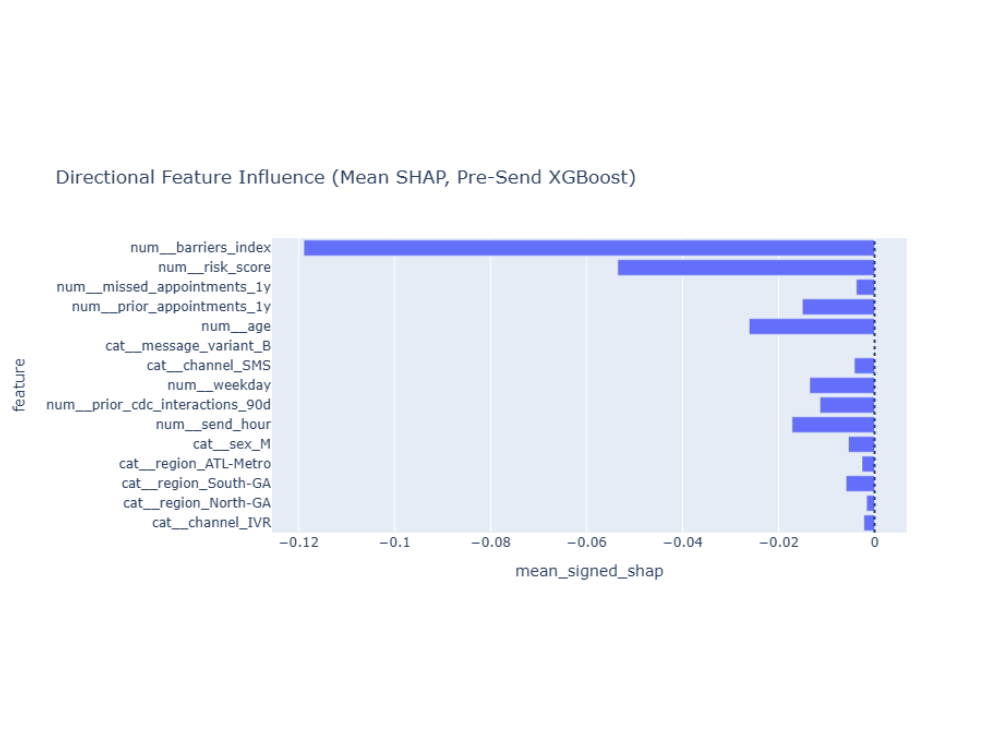
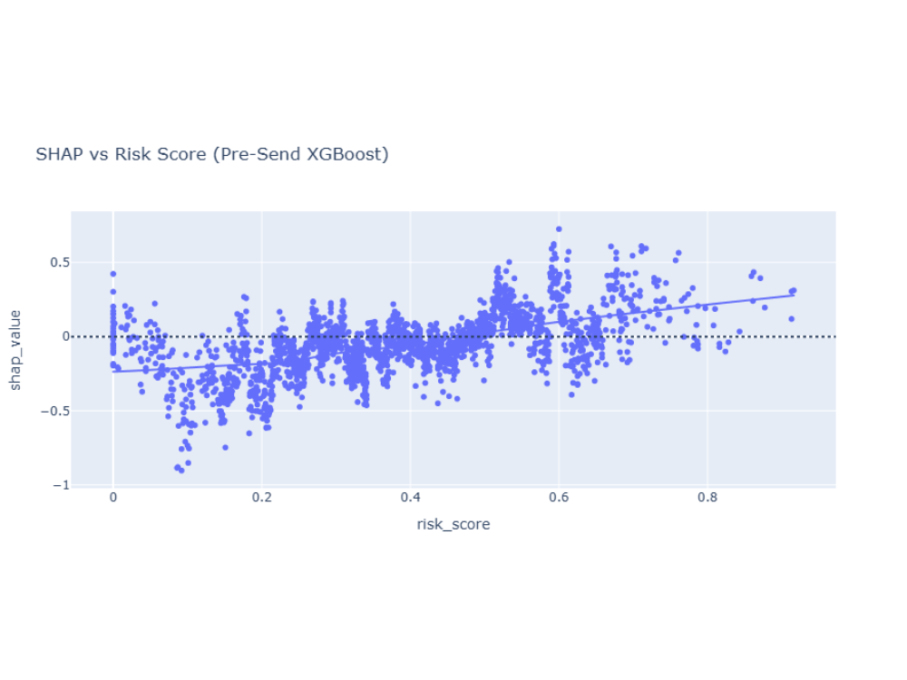

Public Health A/B Testing & Predictive Analytics (XGBoost)

This project demonstrates an end-to-end workflow commonly used in healthcare and public health analytics: causal experimentation (A/B testing) to quantify whether a message improves outcomes, followed by predictive modeling and uplift targeting to help answer an operational question: who should we target before sending?
The data is synthetic but intentionally designed to mirror realistic dynamics: access barriers, health risk, prior engagement history, channel choice (SMS/email/IVR), timing, and heterogeneous responsiveness across subgroups.
Background & Problem Statement
Public health agencies often run large-scale outreach campaigns (SMS, email, IVR) to encourage preventive care such as vaccine boosters. Choosing which message strategy to deploy—and to whom— is a practical analytics problem with real constraints.
Questions addressed:
- Causal impact: Does a personalized message outperform a standard reminder?
- Effect size: How large is the lift (absolute and relative)?
- Predictive: Can we predict scheduling using pre-send features only?
- Targeting: Who benefits most from Message B vs Message A (uplift)?
Synthetic Dataset (CDC-Style Outreach Simulation)
The dataset is generated via a reproducible Python script and includes: demographics, region, channel, timing, health risk, access barriers, and prior engagement signals. Treatment assignment is randomized to support valid A/B inference.
- Behavioral funnel: open → click → schedule (7 days) → complete (30 days)
- Heterogeneous effects: different responsiveness by risk and barriers
- Portfolio-safe: synthetic only; no PHI
Code: src/ab_test_data_generator.py
Data: data/cdc_outreach_ab_synthetic.csv
A/B Testing Methodology (Permutation Test)
Instead of relying on parametric assumptions, the A/B test uses a permutation test to estimate the null distribution of lift under random assignment. This approach is robust, interpretable, and closely mirrors real experimentation workflows.
Lift Definition
Lift = (p_B - p_A) / p_A
Observed Results
- Control rate (A): 26.30% (n = 10,021)
- Treatment rate (B): 30.71% (n = 9,979)
- Absolute lift: +4.41 percentage points
- Relative lift: +16.76%
Because the permuted lifts cluster around 0 (no effect), the observed lift lies far in the right tail, yielding a p-value close to 0 and supporting a statistically significant treatment effect.

Predictive Analytics (XGBoost – Pre-Send Model)
To support operational decision-making, a pre-send XGBoost model predicts the probability
of scheduling within 7 days (scheduled_7d) using only features available before delivery.
This avoids leakage from post-send engagement signals (opens/clicks) and reflects deployment constraints.
- Model: XGBoost binary classifier
- Preprocessing: one-hot encoding (categorical) + passthrough (numeric)
- Imbalance: class weighting + recall-oriented threshold tuning
- Interpretability: SHAP global, directional, and dependence analysis
Global Feature Importance (Mean |SHAP|)
Mean absolute SHAP values show which features influence predictions most strongly overall. Access barriers dominate importance, followed by health risk and prior engagement history. Message variant and channel contribute, but structural constraints are the main bottleneck.

Directional Influence (Mean Signed SHAP)
Mean signed SHAP values indicate whether features tend to push predicted scheduling probability up or down on average. Higher access barriers reduce predicted scheduling, while higher risk and Message B tend to increase it. (Note: mean signed SHAP can mask nonlinear or interaction effects—see dependence plot.)

SHAP Dependence: Risk Score
The effect of risk_score is nonlinear:
low-risk individuals tend to have negative SHAP values (lower predicted scheduling),
while higher-risk individuals increasingly show positive SHAP contributions.
This supports risk-prioritized outreach.

Uplift Targeting (Who to Target Before Sending?)
SHAP explains why the model predicts scheduling; targeting requires estimating who benefits most from Message B. This is done using a counterfactual approach:
- Predict
p_A: probability of scheduling if Message A is sent - Predict
p_B: probability of scheduling if Message B is sent - Compute uplift:
uplift = p_B − p_A - Rank individuals by uplift to allocate Message B under budget constraints
This creates an operational workflow: prioritize Message B for individuals with the largest predicted uplift, and send Message A (or a lower-cost alternative) to the remainder.
Actionable Insights
- Pair messaging with barrier reduction: since access barriers dominate, combine outreach with transportation support, extended hours, or simplified scheduling.
- Prioritize high-risk populations: higher risk increasingly contributes to scheduling propensity; focus personalized outreach where health benefit and responsiveness are highest.
- Use multi-touch for poor adherence: missed appointment history suggests additional follow-up or assisted scheduling may be needed.
- Allocate limited resources via uplift ranking: deploy Message B to the top uplift segment to maximize conversions per outreach cost.
GitHub Repository
The full, reproducible implementation—dataset generation, A/B testing, XGBoost modeling, SHAP explainability, and uplift targeting—is available on GitHub:
🔗 View Project Repository on GitHub
Includes: 01_data_generation_and_AB_testing.ipynb, 02_predictive_analytics_xgboost.ipynb,
dataset generator, synthetic CSV, and documentation.